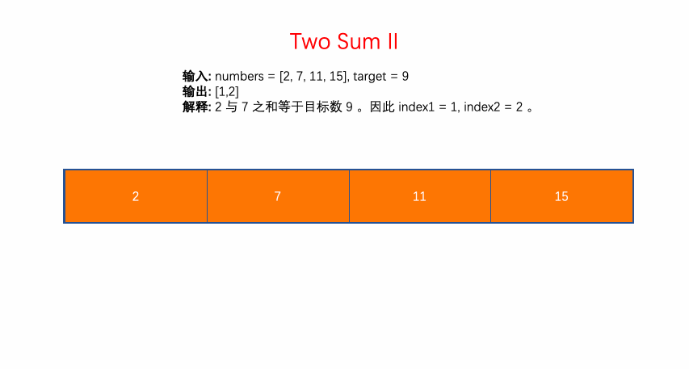

167. Two Sum II - Input array is sorted
Given an array of integers that is already sorted in ascending order, find two numbers such that they add up to a specific target number.
The function twoSum should return indices of the two numbers such that they add up to the target, where index1 must be less than index2.
Note:
Your returned answers (both index1 and index2) are not zero-based.
You may assume that each input would have exactly one solution and you may not use the same element twice.
Example:
Input: numbers = [2,7,11,15], target = 9
Output: [1,2]
Explanation: The sum of 2 and 7 is 9. Therefore index1 = 1, index2 = 2.
Solution:
class Solution {
public int[] twoSum(int[] numbers, int target) {
if(numbers.length == 0 || numbers == null) return new int[] {-1, -1};
int first = 0, last = numbers.length - 1;
while(first < last) {
int sum = numbers[first] + numbers[last];
if(sum == target) return new int[] {first+1, last+1};
else if(sum > target) last--;
else if(sum < target) first++;
}
return new int[] {-1, -1};
}
}